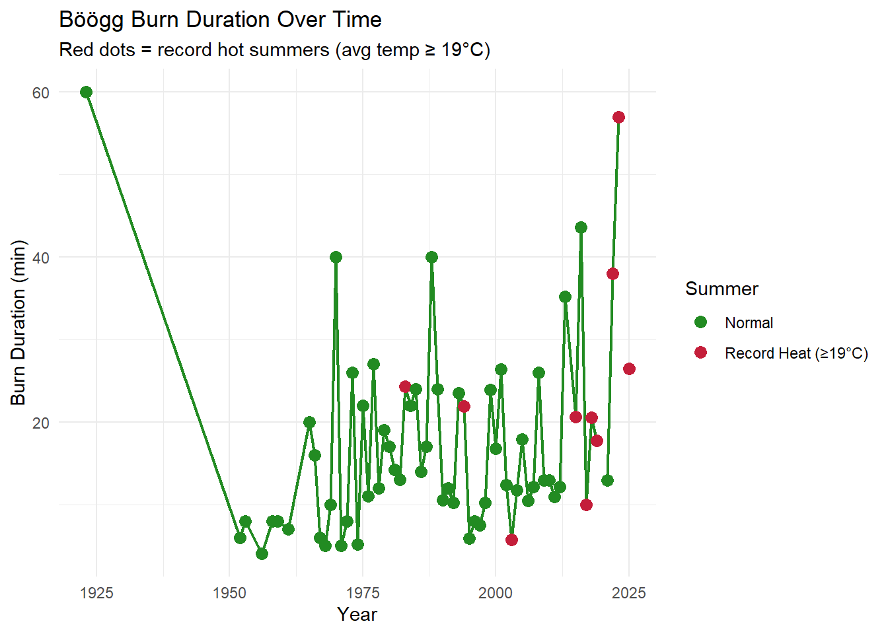
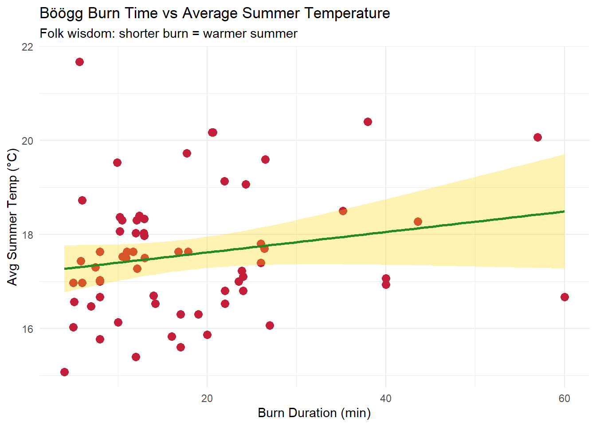

# Libraries we need:
# tidyverse - data wrangling and ggplot2 for plots
# tidytuesdayR - downloads TidyTuesday datasets
library(tidyverse)
library(tidytuesdayR)
# Xmas colors for festive plots
xmas_red <- "#C41E3A"
xmas_green <- "#228B22"
xmas_gold <- "#FFD700"
# Define folder paths here not working
data_path <- "C:/Users/Ainacology/OneDrive/Desktop/Repositories/Tangalin/TidyTuesday/TidyTue_Dec02/Data"
output_path <- "C:/Users/Ainacology/OneDrive/Desktop/Repositories/Tangalin/TidyTuesday/TidyTue_Dec02/Output"
# Load data using tidytuesdayR package
tuesdata <- tt_load('2025-12-02')
sechselaeuten <- tuesdata$sechselaeuten
# Save copy to Data folder
write_csv(sechselaeuten, file.path(data_path, "sechselaeuten_raw.csv"))TidyTue_Dec02
What we need
Data Dictionary from TidyTuesday page
| Variable | Description |
|---|---|
| year | Year of Sechselauten festival |
| duration | Time from ignition until explosion (minutes) |
| tre200m0 | Avg summer air temp at 2m (°C) |
| tre200mn | Min summer air temp at 2m (°C) |
| tre200mx | Max summer air temp at 2m (°C) |
| sre000m0 | Total sunshine duration (hours) |
| sremaxmv | Sunshine as % of possible maximum |
| rre150m0 | Total precipitation (mm) |
| record | TRUE if avg summer temp ≥ 19°C |
Exploratory Plot
# Quick look at the data
glimpse(sechselaeuten)Rows: 67
Columns: 9
$ year <dbl> 1923, 1952, 1953, 1956, 1958, 1959, 1961, 1965, 1966, 1967, 1…
$ duration <dbl> 60.00, 6.00, 8.00, 4.00, 8.00, 8.00, 7.00, 20.00, 16.00, 6.00…
$ tre200m0 <dbl> 16.67, 18.73, 16.67, 15.07, 17.00, 17.63, 16.47, 15.87, 15.83…
$ tre200mn <dbl> 7.03, 9.10, 7.17, 6.80, 8.23, 7.83, 7.53, 6.83, 6.43, 6.87, 6…
$ tre200mx <dbl> 32.47, 33.70, 29.97, 28.77, 30.67, 30.27, 30.83, 31.40, 31.67…
$ sre000m0 <dbl> 247.43, 269.70, 209.53, 172.83, 230.30, 226.67, 236.90, 188.6…
$ sremaxmv <dbl> 56.33, 61.67, 48.67, 39.67, 53.00, 52.00, 54.67, 43.33, 44.33…
$ rre150m0 <dbl> 73.97, 93.67, 157.90, 174.90, 177.87, 109.87, 104.20, 158.63,…
$ record <lgl> FALSE, FALSE, FALSE, FALSE, FALSE, FALSE, FALSE, FALSE, FALSE…# Plot burn duration over time to see trends
p_explore <- sechselaeuten |>
ggplot(aes(x = year, y = duration)) + # year on x, burn time on y
geom_line(color = xmas_green, linewidth = 0.8) + # connect years with line
geom_point(aes(color = record), size = 3) + # color dots by record heat years
scale_color_manual(values = c("FALSE" = xmas_green, "TRUE" = xmas_red), # custom colors
labels = c("Normal", "Record Heat (≥19°C)"), # legend labels
na.value = "grey50") + # grey for missing data
labs(title = "Böögg Burn Duration Over Time",
subtitle = "Red dots = record hot summers (avg temp ≥ 19°C)",
x = "Year", y = "Burn Duration (min)", color = "Summer") +
theme_minimal()
p_explore
ggsave(file.path(output_path, "plot_explore.png"), p_explore, width = 10, height = 5)Q1: Burn Duration vs Summer Temperature
Does folk wisdom hold? Legend says shorter burn = warmer summer.
# Keep only rows with both duration and temp (remove NAs)
df <- sechselaeuten |>
filter(! is.na(duration), !is.na(tre200m0))
# Scatter plot with trend line
p1 <- df |>
ggplot(aes(x = duration, y = tre200m0)) + # burn time vs avg summer temp
geom_point(color = xmas_red, size = 3) + # red dots for each year
geom_smooth(method = "lm", color = xmas_green, fill = xmas_gold, alpha = 0.3) + # trend line
labs(title = "Böögg Burn Time vs Average Summer Temperature",
subtitle = "Folk wisdom: shorter burn = warmer summer",
x = "Burn Duration (min)", y = "Avg Summer Temp (°C)") +
theme_minimal()
p1
ggsave(file.path(output_path, "plot_burn_vs_temp.png"), p1, width = 8, height = 5)
# Correlation test - checks if relationship is statistically significant
cor_test <- cor.test(df$duration, df$tre200m0)
cor_test
Pearson's product-moment correlation
data: df$duration and df$tre200m0
t = 1.5721, df = 63, p-value = 0.1209
alternative hypothesis: true correlation is not equal to 0
95 percent confidence interval:
-0.05207273 0.41836746
sample estimates:
cor
0.194294 Finding: The relationship isn’t statistically significant
Q2: Missing Duration Years
What happened when there was no burn recorded?
# Find years with missing burn duration
missing_years <- sechselaeuten |>
filter(is.na(duration))
missing_years# A tibble: 2 × 9
year duration tre200m0 tre200mn tre200mx sre000m0 sremaxmv rre150m0 record
<dbl> <dbl> <dbl> <dbl> <dbl> <dbl> <dbl> <dbl> <lgl>
1 2020 NA 18.7 9.23 31.3 231. 54.3 113. FALSE
2 2024 NA 19.5 10.3 31.4 215. 50.7 98.9 TRUE write_csv(missing_years, file.path(data_path, "missing_years.csv"))Finding: There are 2 years with no burn duration: 2020, 2024.
According to the Sechseläuten Wikipedia page events were cancelled for various reasons:
- 1914-1918: World War I
- 1940-1945: World War II
- 2020: COVID-19 pandemic
- Other years: Bad weather, political unrest, or other disruptions
Conclusion
Does the Böögg predict summer weather? Based on our analysis: No